docker pull jenkinsCI / CD Introduction with Jenkins
ToC
Source Code Management (SCM)
Why use an SCM ?
When working as a development team, an SCM will allow you:
To collaborate efficiently on a single codebase
Helping resolve code conflicts
Making it easy to share contents
To keep track of every change: SCM as a Single Source of Truth
Providing a complete history
Allowing easy rollback to earlier versions
What are SCMs ?
Source Code Management systems, also known as "Version Control Systems" (VCS):
Are software systems
Record all changes of a set of files over time
Allows you to share those changes
Provide merging and tracking capabilities over the recorded changes
What are the different types of SCM?
We can see 3 types of SCM:
Local
Centralized
Distributed
Local SCM
Older ones
Only track history:
Use a "Version Database" of all the file versions
Stores differences between versions ("diff")
Sharing problem not addressed
Example: rcs (still in Apple XCode Tools)

Centralized SCM (CVCS)
Less old and still widely used
Covers both history and sharing:
History is the same as local SCMs
The "version database" is stored on a central server
Each developer is a client with only 1 (at a time) version of the codebase
Easy learning curve
Example: CVS, SVN, Perforce, TFS

Distributed SCM (DVCS)
Almost the same as CVCS, but the "Version Database" is distributed by duplication on every node
When centralized server is down, you can keep working
Better Conflict resolution, improving collaboration process
Learning curve is a bit more difficult compared to centralized SCMs
Example: Git, Mercurial, Bazaar, Monotone

Cloud-based SCM
You can consider them as "SCM as a Service"
The "Version Database" is hosted in a Cloud Web Service
Pro: Delegate the hosting and managing of your SCM, focus on using it
Con: Your codebase is on another company system
Also provides valuable services around your codebase like online text editor, visual tools, issue tracker, etc…
Examples: Github, Bitbucket by Atlassian, Amazon CodeCommit, Visual Studio Online by Microsoft, SourceForge, GitLab, etc.
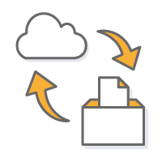
SCM Terminology: Basics
Each set of changed lines on a single file is a "diff"
A set of diffs which have been explicitly validated are a "commit"

A commit is in fact a new version of the codebase
A commit can exist only locally or only remotely
The latest commit on the history is the "HEAD"
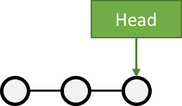
SCM Terminology: Branches
A branch, in SCM terminology, is a pointer to a single commit
HEAD is the "latest" branch, also known as the "master" branch
To integrate a branch, you have to merge it:

SCM Terminology: Pull Request
A Pull-Request is a way of handling branch merges to "master"
A branch is pushed to the central server without having been merged
It "asks" to be merged on a central repository
Opportunity is given to review the changes before merging
Pull request ends by being closed or merged to destination branch

How to use SCM ? Workflow Patterns
Usage of VCS/SCM made well-known patterns emerge:
Centralized Workflow pattern
Feature Branch Workflow pattern
Git Workflow pattern
Forking Workflow pattern
Centralized Workflow Pattern

This pattern is the natural usage of a CVCS like SVN or CVS
It is easy to understand and use, and sufficient enough for a lot of cases
Collaboration is blocked when centralized server is down or history is broken
Centralized Workflow pattern: How to ?
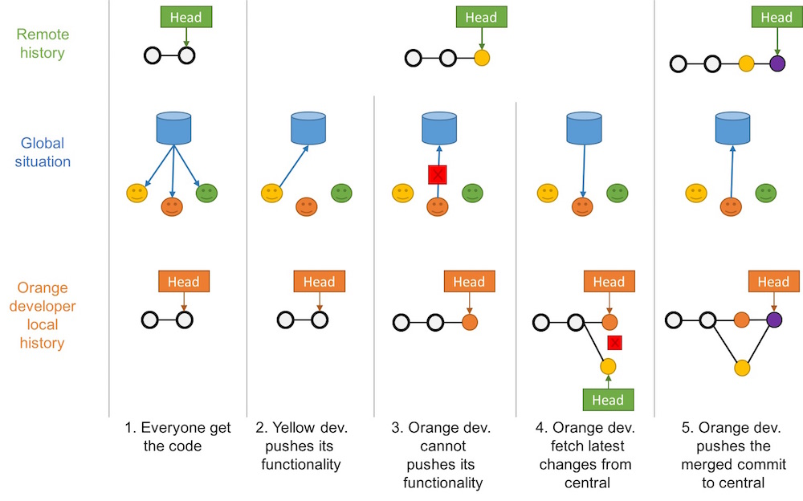
Feature Branch Workflow Pattern
Goal of this pattern: using one branch per feature
Encapsulation allows working without disturbing the main codebase
Allows easier collaboration
Merge conflicts maps the conceptual conflicts: easier to track
Git Workflow Pattern
Extension of the Feature Branch Workflow pattern
Proposed by Vincent Driessen at nvie
Target large-scale projects or software products
Strict branching implementation: roles for specific branches

Fork Workflow Pattern
Pattern inherited from (GitHub/Bitbucket)-like services
Push forward concepts of distributed file systems
Each user "forks" the main repository and can propose pull requests between repositories
Authorization management improved
Autonomy for better collaboration process
Decentralized for new patterns ("promiscuous integration")
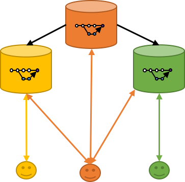
Using SCM to solve problems
Infrastructure as Code is a good example of using SCM to solves common problems:
Goal: Defining an infrastructure system
Operating the infrastructure is changing those definitions (adding/deleting machines, updating ones, etc.)
Collaboration is required on this changes
Using text files stored in SCM solve this problem:
Mapping conflicts to an automated process: merging
Allowing same collaboration and authorization as for code
What did we learn ?
Codebases are versioned in SCM (VCS), which are software that keep track of all changes and help to share source code.
We have 2 "main" types: Centralized and Distributed VCS
Depending on your needs and the VCS, you should use the most efficient pattern for your codebase: Centralized, Feature Branch, GitFlow, Fork
Storing your codebase is not a free meal: think about backup, crash, privacy
Going further
Some recommended readings on this subject:
Software Testing
Why testing Software ?
Code can have mistakes
Those mistakes have consequences
Assume this imply that code must be tested
What is "Software Testing" ?
Testing software follows two baselines:
Validating that the software complies with its goals
Searching for defects to improve the software quality
Automated or Manual Testings ?
Automated = big outcome, can be repeated
Consider Manual testing (with caution) when:
cost of automation exceeds testing outcome
automation not possible (data or hardware constraint)
Software Testing terminology
SUT: "System Under Testing". It defines the boundaries.
Test double: Generic term used for objects and procedures that are simplified versions of sub-part of the SUT. E.g. Mock, Stub, Spy, etc.
Automated testing: Using software outside the SUT, to run and control the testing suites, in a repetitive and reproducible way
How to do "Software Testing" ?
Different types of software testing exists.
Here are some that we will cover:
Unit testing
Integration testing
Smoke testing
Functional Testing
Non-Regression testing
Acceptance testing
Unit Testing
A unit test is:
Focusing on the smaller sub-system possible, defined as a "unit"
Quick to run
Each change of code should trigger a unit test, speed is key
Independents with each others
Run order must not matter
SUT is considered as white box

Integration Testing
Integration testing is the next step:
Validate integration between multiple sub-systems

Sub-Systems refers to:
Internal sub-system: already validated by a unit test
External sub-system: external element like a database, filesystem…
"Integration testing" can covers a lot of subject and may be slower to run
SUT is considered as white box
Smoke Testing
The goal of the smoke test is to fail-fast or conduct further tests on the SUT.
It validates the basics functions of the system
Also known as "Sanity Checking"
It is a kind of simple integration test

If it smokes, it’s bad
— Anonymous Electrician
Functional Testing
Validate the software behaviors against the expectations of the maker
It focus on "normal" behaviors and requirements
SUT is considered as a black box
Non-Regression Testing
Validate that the SUT keeps bringing at least the same outcome
Works by focusing on a single and buggy behavior of the SUT
It ensures that this buggy behavior will not occurs again

Correcting a single bug may introduce several more.
— Any developer
Acceptance testing
Also known as "UAT": User Acceptance Testing or "End User testing"
Test suites of the full SUT, focused on the end-user use cases and feeling
Done with end-users
SUT is considered as a black box

What did we learn ?
Testing is highly recommended to fix outcomes
Automating everything to avoid having to test the tests

Going further
Some recommended readings on this subject:
"Continuous World" Fundamentals
Defining Fundamentals
This section will describe why and what are:
Continuous Integration
Continuous Delivery
Continuous Deployment
Continuous Integration (CI)
Why doing Continuous Integration ?
Allows a team to develop cohesive software more rapidly

Continuous Integration doesn’t get rid of bugs, but it does make them dramatically easier to find and remove.
— Martin Fowler
What is Continuous Integration (CI)?
Continuous Integration is a software development practice where members of a team integrate their work frequently, usually each person integrates at least daily - leading to multiple integrations per day.
— Martin Fowler - Continuous Integration
How to do Continuous Integration ?
Each integration is verified by an automated build (including test)
Integrate code often, at least daily, to make integration a non-event
Continuously build and integrate
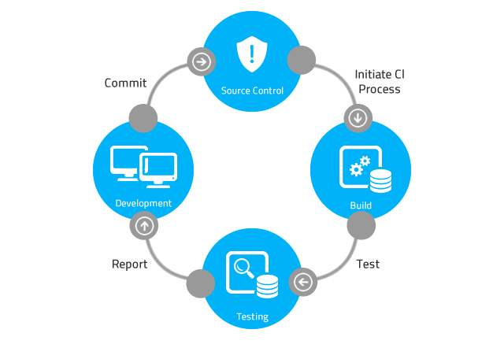
Continuous Delivery (CD)
Why doing Continuous Delivery ?
How long would it take to your organization to deploy a change that involves just one single line of code?

Reduce deployment risks
Allow more frequent user feedback
Make progress believable by everyone
What is Continuous Delivery ?
Continuous Delivery is the next step after Continuous Integration:
Every change to the system can be released for production
Delivery can be done at any time, on any environment
Your team prioritizes keeping the software deployable over working on new features
— Martin Fowler
How to do Continuous Delivery ?
Having a collaborating working relationship with everyone involved
Using Deployment Pipelines, which are automated implementations of your application’s build lifecycle process (cf. next chapter)
Continuous Deployment
What is Continuous Deployment ?
Continuous Deployment is the latest step after Continuous Delivery.
Any change to the system is pushed to production in an automated way.
Continuous Delivery versus Deployment
Both are always confused:
Hence relying on automation, CD still needs a manual step before production.

What did we learn ?
Continuous Integration (CI) is an automated way of integrating code often
Continuous Delivery (CD) is the natural extension of CI, that make the code always ready to be deployed
Continuous Deployment is the next step, that make any change deployed to production
Going further
Some recommended readings on this subject:
Deployment & CD Pipeline
Why use a CD Pipeline ?
Competitive advantage is given by creating value across you set of activity
A "Value Chain" is a modelization of you business to measure both
Global Value
Residual value to re-inject in the value chain
Using a "CD Pipelines" gives same outcome as a value or supply chain in other industries
"Fast is cheap": Pipeline makes failure detection as early as possible
What is a CD Pipeline ?
Model of the value stream of your software production business
This is the value stream mapping of the process
Central Foundation to achieve Continuous Delivery
We also name this a Deployment Pipeline
It is driven by the fail-fast concept
CD Pipeline Anatomy
Composed by stages, mapped to a measurable step
Transition between 2 stages is a gate
Manual or Automated
gates triggers next stage
Stages are run sequentially and/or in parallel
Thus gates can be multi-directionals
Driven by atomic change: generally SCM single commit
A CD Pipeline Example

Deployment Stages of a CD Pipeline
Deployment is the set of actions that makes a software system ready for usage
Deploying a software is made on environments
Environments are isolated runtimes with specific properties:
Production is where software lives for end users and bring outcomes
Testing environment are locations where to run test against software
Disaster Recovery Environment is an emergency location to run software when a disaster occurs on production
Automated Deployment
Using automation for a deployment stage:
Make deployment repeatable and less error-prone
Bring ROI when deploying on new environment
Make frequent releases possible by bringing confidence
Still can require a manual (read: human) trigger to have validation gate
How to do Goods CD Pipelines ?
Pipelines driven by 2 golden rules:
Keep it Efficient
Always build upon known and good foundations
Keep Pipelines Efficient

Try to parallelized the long-running steps:
Distribute by default automated ones: build, tests…
Manual steps should be tightly measured: Are they really needed ?
You can even make manual gates parallelized:
Think it as a 1-N or N-1 relationship
Each stage of the N is a deployment to a different environment
Distributing the Build Stage
The build stage:
Fully automated stage.
Automated Gates to trigger: event from the SCM (commit, merge, pull-request)
Easy to distribute to be efficient:
Parallelize builds of different target architectures or OSes (ARM, Windows, Android…)
Parallelize builds on independents modules of your code before assembling (Map & Reduce)
Unit and Integration tests are tied to the code: run them in parallel !
Distributing the Deployment Stage
The deployment stage:
Should be automated, but can be manual
Gates can be as well manual as automated
Easy to distribute the automated ones
You can also distribute manual gate-based if they are on different environments
An Optimized Pipeline Example

Always Build upon Good Foundations
Introducing Binary reuse: "Only Build Your Binaries Once"
Compiling again a given binary violates the efficiency rule, (shorter build time)
Ensure you same version of codebase is used across the pipeline
If the binary does not comply with "deployable" rule, then it must fails a test
Focus on failing-fast
What did we learn ?
CD Pipeline is a great way to achieve your journey to Continuous Delivery
It is a model of your value stream mapping
Keep your pipelines efficient by parallelizing
Focus on failing-fast
Reuse good pipeline runs
Going further
Some recommended readings on this subject:
The Feedback loop
Why having a Feedback Loop ?
Context: Continuous Delivery implemented with CD Pipeline
Target: Focusing on fast feedback to react quickly
Need systems that give quick feedback to pipeline’s actors
Key to success on the efficiency rule
Give confidence to the actor: they when when it breaks
What is a Feedback loop ?
The feedback loop is the set of tools that:
Provides status of each step of the pipeline
Give the right message to the right actor of the pipeline
Is also a great source of measures
How to Implement a Feedback Loop ?
Start by evaluating:
Which actors ? (Developers, Operation, Project Manager, Business)
Which communication media ? (Direct Visualization, E-Mail, IRC, Collaboration chats, Video messaging, Extreme Feedback Devices)
Which triggers, priorities, frequencies and limits ? (Stage status change, Mail gray-listing, Production feedback vs. testing feedback)
Measuring the pipeline: KPIs and Metrics
Goal of a pipeline is to provide model for the value stream:
Each stage have a Value added time
Each gate have an elapsed time
Keeping feedback on those values is mandatory to ensure value is still there
Adding feedback metrics to pipeline metrics helps you:
Provides information to Business
Helps technical choices
Avoiding over-optimization
What did we learn ?
Having a pipeline is not enough: you need feedback
Feedback will target different different actors, in a lot of ways
Feedback improves the measures of your value stream mapping
Fast feedback helps to focus on fail fast
Going further
Some recommended readings on this subject:
Security
Why do Security ?
Your organization uses information to create value
Information is valuable and must follow:
Confidentiality
Integrity
Availability
Having Security concerns allows respecting those rules
What is Security ?
Security is the set of practices and tools to fight and prevent threats
It’s all about following those principles:
Knowing the system
Least privilege: If you do not need to do it, you don’t have the right to do it.
Defense in Depth: System are layered. Put security on all layers.
Preventing is good. Detection is better: Continuous monitoring and detecting.
How to do security ? Least privilege
Handling "Least privileges" concepts makes you manage the AAA concepts:
Authentication
Authorization
Accounting
Authentication
Authentication is the set of tools and procedures that permits to identify a user with enough confidence
When police controls your ID, it is authentication
Using a login and a password is an authentication
Biometrics are also a type of authentication
2FA, that stands for "Two Factor Authentication" is a stronger authentication

Accounting
Occurs in the context of a user both authenticated and authorized.
It measures resources used or consumed by the user during access.
This can be amount of data, compute resources, but also system time.
It enforces limits when they are defined to protect system.
Related to system measurement, capacity planning and feedback loops
How to do security ? Defense in Depth:
Defense in Depth is not an easy subject, but we are focusing on the Credentials
Given the previous AAA context
A lot of systems for stages of pipelines (SCM, CI Server, Environment, WebServices, etc.)
How to enforce homogeneity of AAA ?
Credential management are the practices and tools that avoid leaking authentication information to non authorized users.
How to do security ? Detection is better
Security has to be meta: how to enforce security itself ?
Auditing the security processes and system is a method to validate them.
It can be seen as an Acceptance Testing:
Need to be continuously run
Should be done by someone that did not do this
It can be related to external certification for external confidence (e.g. PCI)
What did we learn ?
Security is a required discipline that must be taken into account from beginning
It is a large subject but enforcing the rules is a big win
Implementing AAA framework is a good way to start
Security is related to feedback: which action to take when a problem arises ?
Measurement is not an option, but a must have
Going further
Some recommended readings on this subject:
Configuration Management (CM)
Why use CM ?
Ideal World: a Production Environment always stay the same
Real World: software systems change very often
Configuration Management (CM) allows to handle changes on your software systems, maintaining its integrity over time.
What is CM ?
CM is a global practice of handling systematic changes
In the software world, CM is a detailed recording of all assets:
Including configuration data, updates history
Both hardware and software assets are tracked
Good practice is to use Unified CM, that require a single software suite that will implement it
How to do CM ?
Software CM identifies four domains for each software element:
Configuration identification: Process of knowing all attributes defining a configuration item
Configuration control: Set of stages required to change a configuration item’s attributes
Configuration status accounting: Ability to record and report at any time the configuration’s item attributes
Configuration audits: Auditing both physical and functional configuration’s item attributes
How to do CM ?
Select a tool that fits your needs
Chef, Puppet, Ansible, CFEngine, etc.
Use Configuration as Code, and try to learn Infrastructure as Code
Store everything in SCMs
Even your Infrastructure state
What did we learn ?
Configuration Management is the key handle changes
Store every piece of configuration in SCM to solve common problems
Have a procedure and policies for change management
Going further
Some recommended readings on this subject:
Containers
Why use Containers ?
Containers avoid traditional Virtualization Resources Overhead
Efficient Resource Usage
Containers implements easily the immutable machines patterns
Reusability and portability nodes
It provides fast startup (~1s) and tear-downs (~2s)
Accelerate your workloads
What are Containers ?
Containerization is >10 years technology, from OS kernel-based like Linux, allowing to run isolated programs
Compared to traditional Virtualization, it does not require to instantiate a complete underlying OS: containers runs on their hosts’s metal
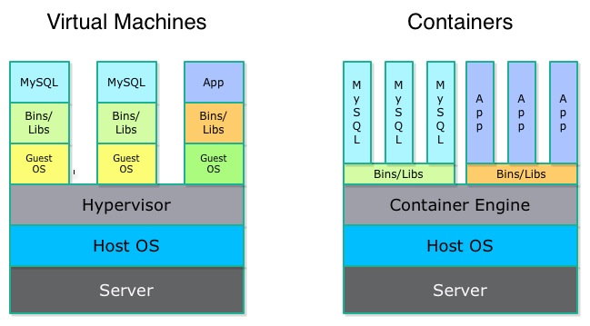
Containers Key Players
Containers technologies exists since years, coming from web hosting:
LXC (since 2006)
OpenVZ, from Virtuozzo (since 2005)
Solaris Zones (2004)
BSD Jails (2001)
New players are there, and are currently dominating this world:
Docker, from Docker Inc., which has made containerization available for masses
We’re going to focus on this one
rkt from CoreOS, main Docker opponent
How are Containers Working ?
Containers starts from an image (kind of template)
Image is immutable. Change is needed ? Build a new image
Common pattern is 1 process inside 1 container
Complexity is managed at containers orchestration level
Easier to maintain
Isolation is provided by kernel capabilities (control groups, namespacing, system call restrictions…). You can see it as a Chroot on steroids
How to: Running Container with Docker
Pull the Official Jenkins image
Run a new container (instance) based on this template on 8080 port
docker run -p 8080:8080 jenkins # Which process is run ? 'jenkins' images takes care of thisAccess your Jenkins instance on http://localhost:8080
Notice that you did not installed Jenkins nor Java on your host !
What did we learn ?
Containers are a technology that provide lightweight isolation
It is useful to provide repeatability and portability
It allows an easy implementation of immutable machines (compared to traditional provisioning)
We’re going to focus on Docker, one of the current container technologies
Going further
Some recommended readings on this subject:
Jenkins overview
Meet Jenkins…
#1 Continuous Integration and Delivery server
Created by Kohsuke Kawaguchi
An independent and active community (jenkins.io)
10 years old
500+ releases to date
100,000 active installations
300,000 Jenkins servers
1,200+ plugins
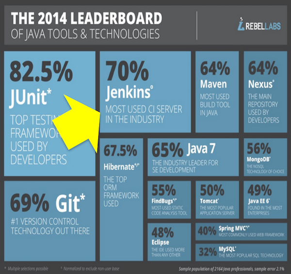
Jenkins Popularity: Through the Roof
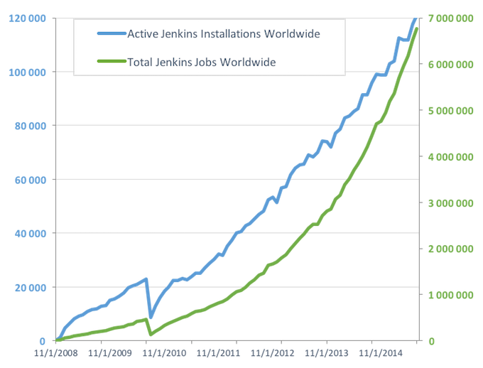
Worldwide Adoption
Jenkins is the CD Orchestrator
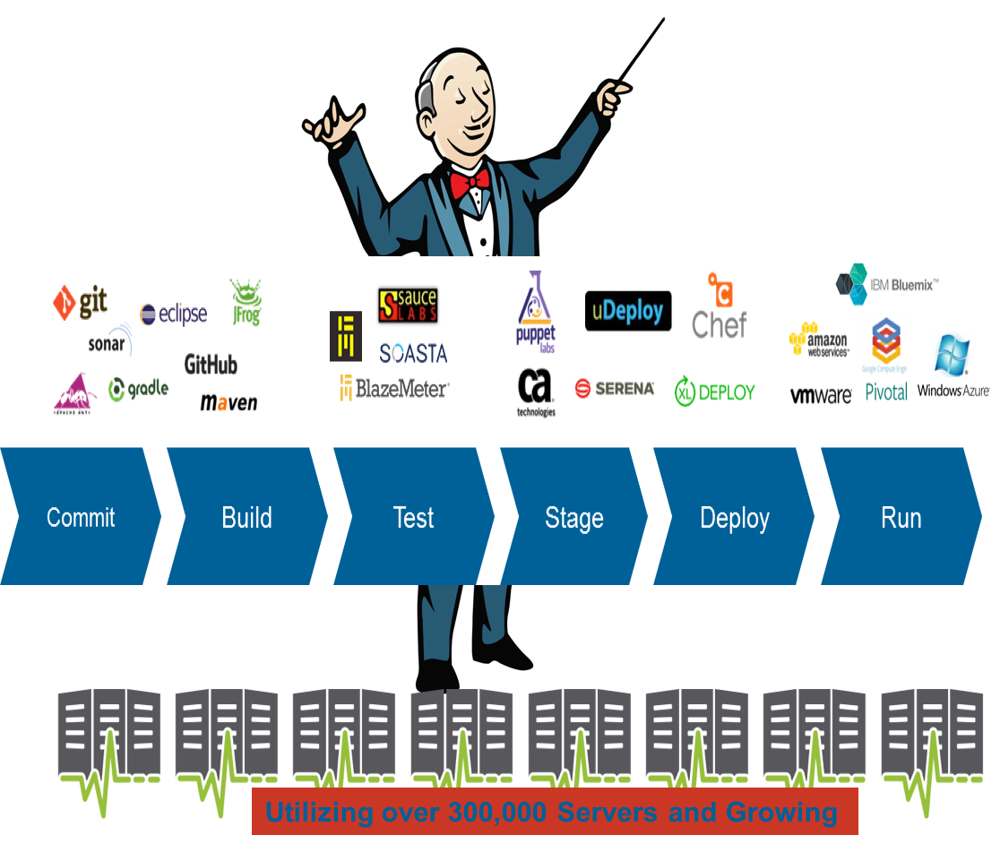
CloudBees Introduction
CloudBees and the Jenkins Community
Kohsuke Kawaguchi
Community leader and CloudBees’ CTO
Code and Releases
CloudBees partners with the community on development
CloudBees engineers contribute a majority of Jenkins OSS code
CloudBees partners with the community on releases
CloudBees contributes fixes back to the community
Produces Jenkins Quarterly Newsletter
Conducts Jenkins User Conferences
CloudBees Inc.
Incorporated in April 2010
~ 200 people as of July 2016
Headcount and revenue tripled between January 2015 and July 2016
Presence in 14 countries
Offices:
USA:
Raleigh, Richmond, San Jose
Europe:
Sevilla (Spain), Reading (UK), Neuchatel (Switzerland)
Follow-the-sun 24/7 Support locations
We Deliver Jenkins @ Enterprise Scale
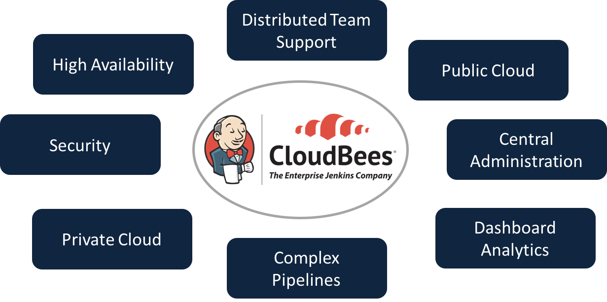
CloudBees Jenkins Platform
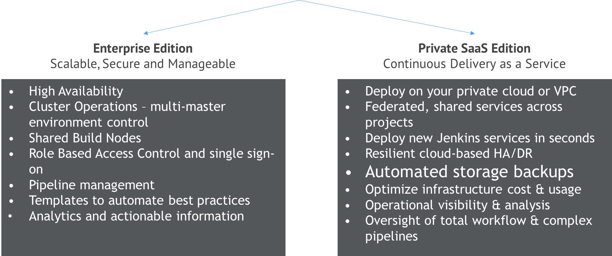
CloudBees Jenkins Platform: Enterprise Edition
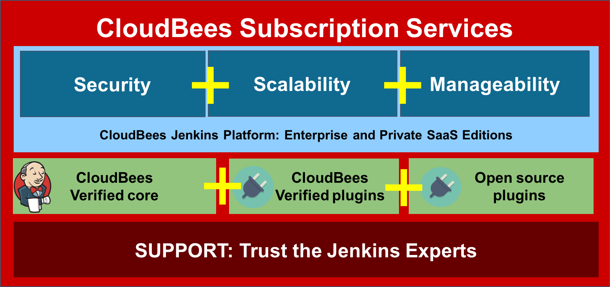
CloudBees Jenkins Platform: Private SaaS Edition
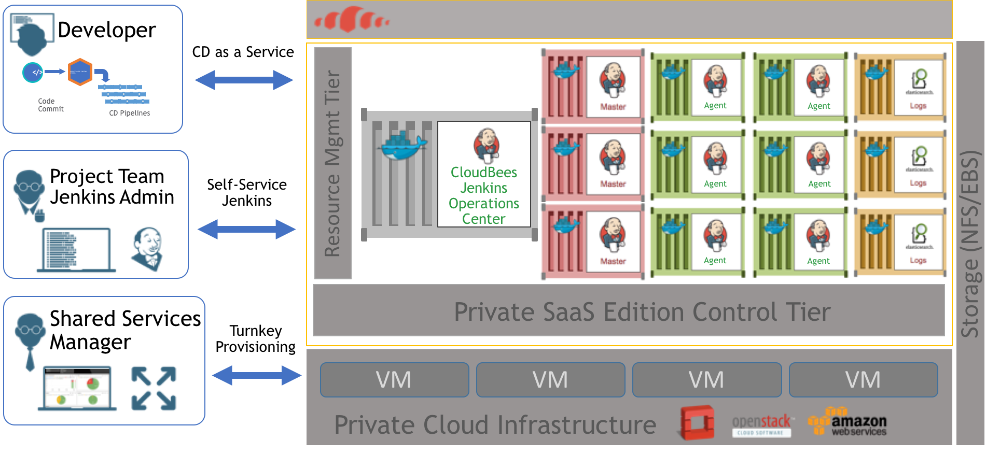
Jenkins Services from CloudBees
CloudBees Subscription Model
CloudBees sells subscriptions that entitle you to receive support for:
CloudBees Jenkins Platform
OSS Jenkins including 1,200+ Open Source Plugins
Customers are charged an annual subscription fee per installation
Multi-year subscriptions are available
A typical service subscription includes:
Software updates, bug fixes, and upgrades
Technical support
stable versions, stable APIs, and more
CloudBees Resources
Customer Engagement
Support
Knowledge Base
Diagnostics
Professional Services
Architecture Assessment & CD Guidance
Bootstrap Implementation Services
Migration Assistance
Certified Partners
Training
DevOps transformation
DevOps integration
Custom Development
Lab
Assez parlé, salissons nous les mains !
Ce "Lab" correspond aux étapes pratiquées ensemble durant l’après-midi.
Pré-requis au Lab
Les éléments suivants doivent être installés au préalable :
VirtualBox 5.1.x (https://www.virtualbox.org/)
But: Permettre le fonctionnement d’une VM
Vagrant 1.9.x (https://www.vagrantup.com/)
But: Piloter la VM de manière automatique et partageable
Une ligne de command "bash"
Sous Windows, GitBash ou Cygwin sont de bons points de départ
Pourquoi une VM ?
L’utilisation d’une VM nous permet:
D’éviter de perturber votre environement de travail
De nettoyer "correctement" une fois le lab terminé
De fournir un environement stable et reproductible
Mais entraîne un surcoût de performance
Initialisation du Lab
Ouvrir un terminal et saisir les commandes suivantes:
# Vérifier la version et l'installation de Vagrant
$ vagrant -v
# Installer la VM localement (~1 Go à télécharger, 1 seule fois, depuis github.com)
$ vagrant box add jenkins-lab https://github.com/dduportal/snowcampio-2017/releases/download/1.1.0/snowcampio-2017.box
# Création d'un répertoire de travail et initialisation du projet
$ mkdir snowcamp-jenkins-lab && cd snowcamp-jenkins-lab \
&& vagrant init -m -f jenkins-lab
# Vérification en lisant le contenu du fichier Vagrantfile généré
$ cat Vagrantfile
# Démarrage de la VM
$ vagrant up
# Vérification du fonctionnement de la VM, "state" doit être à "running"
$ vagrant statusAccès aux services
La VM est démarrée, les services suivants sont accessibles :
Un serveur Web pour la page d’accueil:
Une instance Jenkins (authentification: admin / snowcampio2017) :
Un serveur git, "Gitea", pour héberger le code localement :
Une ligne de command "DevBox" en HTML:
Ces services fonctionnent avec docker et docker-compose dans la VM:
Tout est stocké dans
/var/customizeet/var/lib/docker
Bien commencer avec l’application de demo
Avant de plonger dans l’usage de Jenkins, voici un exercice permettant de maîtriser l’application de démo.
GameOfLife - Maven & Java
Ouvrir le service "DevBox" à l’adresse http://localhost:10000/devbox
Une ligne de commande apparaît
Saisir la séquence de commandes suivante :
# Vérification de la présence des outils requis (java, maven git)
bash-4.3# java -version
bash-4.3# mvn -v
bash-4.3# git --version
# Récupération de l'application de démo
bash-4.3# git clone http://localhost:10000/gitserver/dev/gameoflife
# Exécution des commandes mvn, cf. slides pour intention
bash-4.3# cd gameoflife/
bash-4.3# ls -l # pom.xml => Projet Maven
# cf - https://maven.apache.org/
bash-4.3# mvn clean # Nettoyer l'espace de travail
bash-4.3# mvn compile # Compiler l'application et ses dépendences
bash-4.3# mvn test # Jouer les Tests Unitaires
bash-4.3# mvn package # Packager l'application dans son format final (WAR)
bash-4.3# mvn verify # Exécuter les tests d'intégration
bash-4.3# mvn install # Installer l'application dans ~/.m2Exécuter l’application GameOfLife
Une fois l’application compilée, testée et "empaquetée":
bash-4.3# mvn -pl gameoflife-web jetty:run
...
# Application accessible sur http://localhost:9090
# Utiliser CTRL + C pour quitterDémarrer et configurer Jenkins
Accéder à Jenkins à l’adresse http://localhost:10000/jenkins/
Authentification: admin / snowcampio2017
Naviguer dans Manage Jenkins → Configure System
Vérifier que # of executors est à
0
Naviguer dans Manage Jenkins → Manage Nodes et créer un nouvel agent:
Nom:
maven-agentLabel:
maven3-jdk8"Remote root directory":
/home/jenkinsLaunch Method: "Launch slave agent with SSH"
Hostname: maven-agent
Clef: Utiliser le credential "agent-ssh-key"
Naviguer dans Manage Jenkins → Global Tool Configuration
Ajouter une nouvelle installation Maven nommée
maven3, en mode automatique
Un premier Job d’Intégration Continue
Récupérer l’adresse du dépôt Git local "gameoflife":
Depuis la page d’accueil http://localhost:10000
Naviguer dans le Gitserver
Aller dans Explore → dev:gameoflife
Copier l’URL en haut à droite, prêt du bouton "HTTP" bleuté
Créer un job de type "Freestyle" :
Nom:
gameoflife-freestyleConfigurer le SCM sur le dépôt "gameoflife local", sans aucun "Credential"
Utiliser
gogspour le "Repository Browser", avec l’adresse du dépôt sans le ".git" à la finBuild Step: Invoke a top level Maven
Utiliser l’installation
maven3et le goalclean install
Lancer un build manuellement pour tester
Un meilleur temps de réponse code → retour du build
Configurer un webhook depuis le dépôt local "gameoflife":
Authentification dans http://localhost:10000/gitserver
Utiliser les identifiants suivants: dev / dev
Accéder aux réglages "hooks" du dépôt git local: http://localhost:10000/gitserver/dev/gameoflife/settings/hooks
Ajouter un WebHook de type "Gitea", avec la paylod URL sur http://localhost:10000/jenkins/gogs-webhook/?job=gameoflife-freestyle
Positionner les "triggers" (déclencheurs) sur I need everything
Tester les webhooks en cliquant dessus, puis le bouton Test Delivery : un 2nd build doit être lancé
Visualiser un build en erreur
Visualiser un job en erreur + les changements associés:
Via le dépôt local dans Gitea, naviguer sur le fichier
gameoflife-core/src/main/java/com/wakaleo/gameoflife/domain/Cell.javaet cliquer sur le stylo "Edit" en haut à droiteModifier ligne 4
DEAD_CELL(".");enDEAD_CELL("-");puis enregistrer.Un nouveau build est lancé tout seul (grâce au webhook), son résultat sera "FAILED" car les tests ne passeront plus
Corriger l’erreur ensuite, enregistrer, un nouveau build est lancé, retour à la "normale"
Visualiser la page du job, naviguer dans les menus "Recent Changes", et cliquer sur le liens "gogs" pour voir les différences dans le dépôt Gitea
Pipeline "Scripted" Simple
Un premier Pipeline Jenkins "scripted" (utilisant Groovy + DSL) :
Créer un nouveau Job de type "Pipeline", nommé
gameoflife-pipelineConserver les options par défaut
Pipeline Définition: Pipeline script (aka. inline, saisi directement dans l’interface)
Ce n’est pas l’idéal : utilisation uniquement à des fin pédagogiques
Utiliser le lien Pipeline Syntax pour ouvrir le générateur de "snippet"
Exercice - Pipeline "Scripted" Simple
Exercice : Créer un pipeline qui va cloner le dépôt et afficher le contenu du dépôt
Indices: mots clefs à utiliser :
node,stage,gitetshSolution sur la prochaine slide
Solution - Pipeline "Scripted" Simple
node('maven3-jdk8') {
stage('Checkout Code') {
git 'http://localhost:10000/gitserver/dev/gameoflife.git'
sh 'ls -al'
}
}Pipeline "Scripted" avec Jenkinsfile
Objectif 1: Déplacer le script Pipeline dans le dépôt Git (plutôt que dans Jenkins)
Configuration du job
gameoflife-pipelineà changer: Pipeline script from SCMConfigurer pour pointer sur le dépôt local git
gameoflifeLe build doit planter: pas de
Jenkinsfileprésent
Dans Gitea:
Modifier le WebHook pour pointer sur
gameoflife-pipelineau lieu degameoflife-freestyleCréer un nouveau fichier
Jenkinsfileà la racine du dépôt (utiliser le bouton bleu New File en haut, au centre)Remplir ce nouveau fichier avec le contenu de l’exercice précédent
Grâce au webhook, le build a dû se construire avec succès
Exercice - Pipeline "Scripted" avec Jenkinsfile
Exercice : éditer le
Jenkinsfileafin de résoudre les éléments suivants:Eviter la répétition de configuration Git (adresse du dépôt) entre la configuration du job et le pipeline
Implémenter des étapes de Pipeline pour la compilation Maven
Les commandes Maven doivent utiliser l’installation "maven3"
Indices : mots clefs à utiliser:
checkout scm,stage,def mvnHome = tools (…)etsh
Solution - Pipeline "Scripted" avec Jenkinsfile
node('maven3-jdk8') {
stage('Checkout Code') { checkout scm }
def mvnHome = tool 'maven3'
stage('Build') {
sh "${mvnHome}/bin/mvn clean compile"
}
stage('Unit Tests') {
sh "${mvnHome}/bin/mvn test"
}
stage('Packaging') {
sh "${mvnHome}/bin/mvn package"
}
stage('Integration Tests') {
sh "${mvnHome}/bin/mvn verify"
}
stage('Install') {
sh "${mvnHome}/bin/mvn install"
}
}Exercice - Amélioration du Pipeline
Objectifs:
Simplifier les commandes Maven en utilisant des variables d’environnement
Utiliser un plugin compatible Maven pour la phase "Maven install" afin de voir une 2nd façon de faire
Exercice : Modifier le
Jenkinsfileafin que toutes les commandsshappellent la commandemvnsimplement, sans préciser d’élément avant. Ceci vous impose de supprimer la définition de variabledef … = toolsLors de l’étape "mvn install", utiliser le plugin https://wiki.jenkins-ci.org/display/JENKINS/Pipeline+Maven+Plugin
Utiliser la gestion des variables d’envrionnements, en ajoutant l’emplacement de Maven dans la variable d’environnement "PATH"
Indices : mots clefs à utiliser :
withEnvetwithMaven
Solution - Amélioration du Pipeline
node('maven3-jdk8') {
stage('Checkout Code') { checkout scm }
withEnv(["PATH+MAVEN=${tool 'maven3'}/bin"]) {
stage('Build') { sh "mvn clean compile" }
stage('Unit Tests') { sh "mvn test" }
stage('Packaging') { sh "mvn package" }
stage('Integration Tests') { sh "mvn verify" }
}
withMaven(maven: 'maven3') {
stage('Install') { sh "mvn install" }
}
}MultiBranch Pipeline + Workflow complexe
Objectifs:
Utiliser la pratique recommandée du "MultiBranch Pipeline" pour implémenter le "Pipeline as Code"
Appliquer ce workflow sur une amélioration du Pipeline pour intégrer une validation manuelle dans l’IHM de Jenkins
Créer un nouveau job Jenkins de type "MultiBranch Pipeline", nommé
gameoflife.Configuration: utiliser Add Source → Git → faire pointer sur le dépôt
gameoflifelocal comme précédemmentModifier le WebHook pour pointer sur cette URL : http://localhost:10000/jenkins/job/gameoflife/build?delay=0
Etudier le job: un dossier a été automatiquement créé, avec un job pipeline "master" dedans, correspondant à votre branche.
Exercice - MultiBranch Pipeline + Workflow complexe
Créer une nouvelle branche nommée
better-pipeline, en utilisant la devbox:rm -rf gameoflife git clone http://localhost:10000/gitserver/dev/gameoflife.git cd gameoflife git checkout -b better-pipeline touch .dummy-decoy git add . git config --global user.email "dev@localhost.com" git config --global user.name "Dev" git commit -m "Init branche better-pipeline" git push origin better-pipeline # Authenticate with dev / devDans Gitea, éditer le fichier
Jenkinsfilesur la nouvelle branch (recharger la page si besoin). Il faut implémenter une validation manuelle avant l’étape "Install"Si aucune validation manuelle n’intervient avant 120 secondes, le build doit s’arrêter en status "failed"
Pour voir les validation de pipeline, utilisez le "Console Output", ou cliquer sur l’étape visuelle pour faire apparaitre le popup (ou utiliser BlueOcean)
Indice: mots clef à utiliser:
stash,unstash,timeoutetinput
Solution - MultiBranch Pipeline
node('maven3-jdk8') {
stage('Checkout Code') { checkout scm }
withEnv(["PATH+MAVEN=${tool 'maven3'}/bin"]) {
stage('Build') { sh "mvn clean compile" }
stage('Unit Tests') { sh "mvn test" }
stage('Packaging') { sh "mvn package" }
stage('Integration Tests') {
sh "mvn verify"
stash includes: 'target/**', name: 'mvn-target'
}
}
}
stage('Waiting for approval') { timeout(time: 120, unit: 'SECONDS') { input 'OK to install ?' } }
node('maven3-jdk8') { withMaven(maven: 'maven3') {
stage('Install') {
unstash 'mvn-target'
sh "mvn install"
}
}}